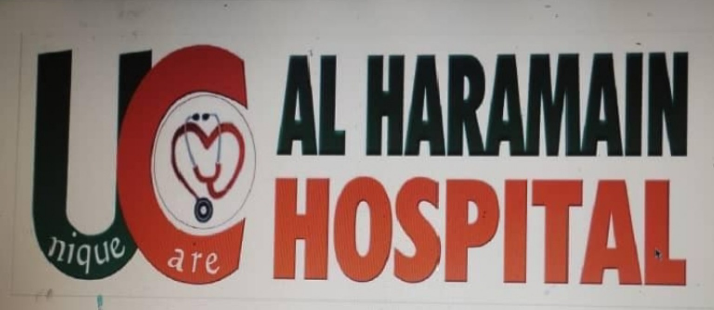
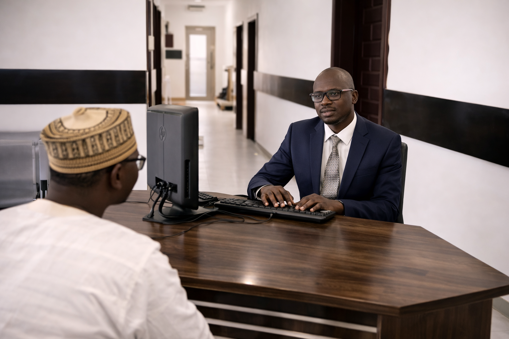
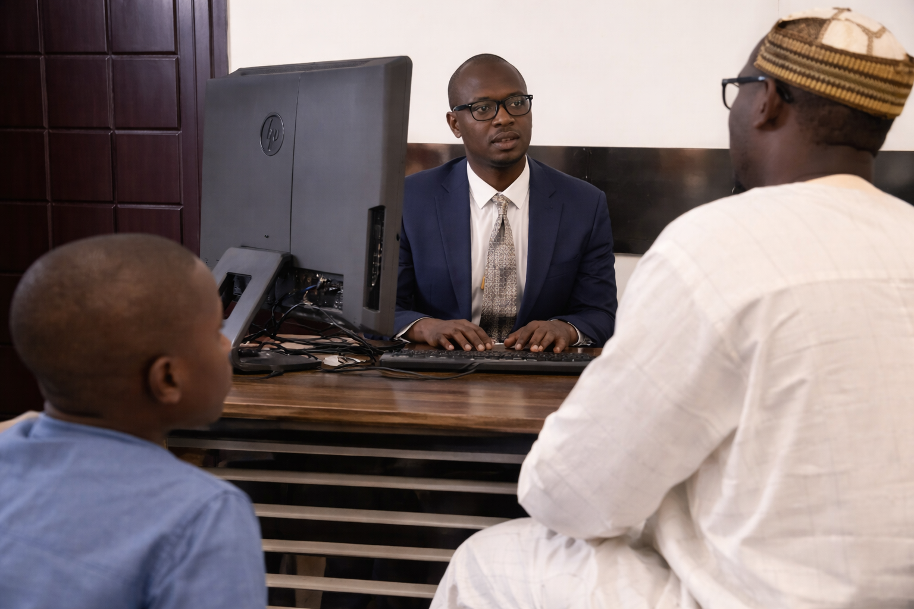
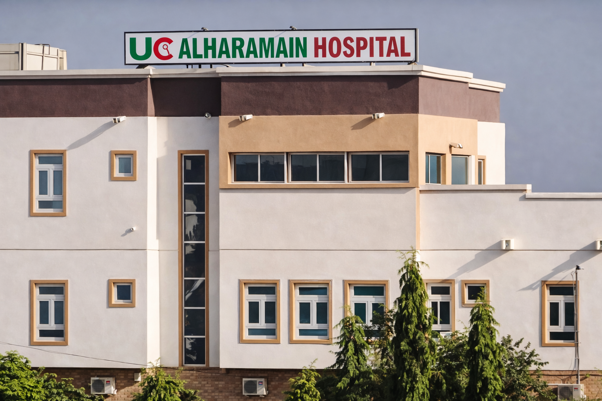

Unique Care Al Haramain Hospital is a leading private healthcare facility in Kano State, delivering safe, high-quality and patient-centred medical care.

To serve the world with the highest level of safe, quality healthcare.
To be the best specialised private hospital of choice.
We provide remote consultation, diagnosis, and follow-up using modern telecommunication technologies.

Phone: 09048931981
Email: uniquecarealharamainhospitalh@gmail.com
Location: Kano, Nigeria
